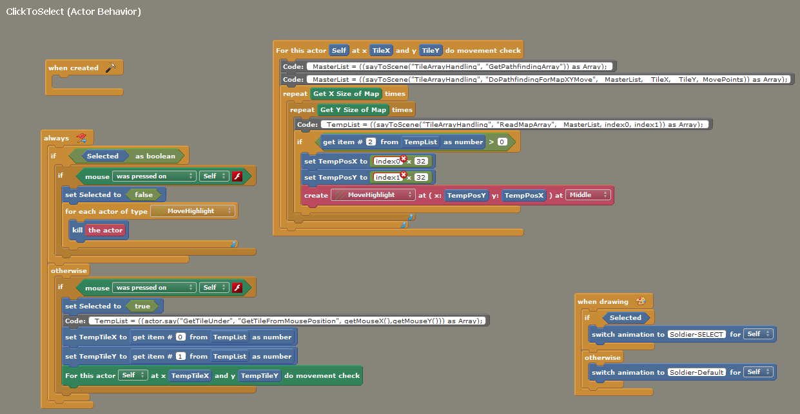

Engines
Game Engines são os softwares utilizados para se criar jogos, também conhecidas como motores gráficos, são responsáveis por realizar diversas funções comuns a jogos digitais como renderizar pixels na tela, fazer cálculos de física, dar suporte a sons, suporte a animações, gerência de memória e de arquivos, entre outros.
Já foi mais comum escrever sua própria engine do zero, coisa que demora e é dificil para um caraho. Felizmente hoje em dia existem diversas engines disponíveis cada uma com suas vantagens, disvantagens e especificações, cada uma melhor atinge necessidades de pessoas diferentes com conhecimentos diferentes.
Eu segui um conselho que vi provavelmente em algum video do youtube para experimentar o maior numero de engines que puder para poder escolher a que melhor você se adapta, e posso dizer que foi uma ótima experiência, entender as capacidades e o funcionamento de cada engine faz com que, por comparação, você entenda melhor o workflow de cada uma.
Deixo com vocês uma lista das ferramentas que tive contato, outras listas maiores podem ser encontradas como essa aqui do pixel prospector, ou essa maior ainda no github chamadamagic tools que abrange todo tipo de ferramenta.
Construct
Construct 3 é uma engine 2D que não requer conhecimento de programação, construindo sua lógica através de eventos e ações, com diversos comportamentos prontos. Ela funciona no browser permitindo abrir seus jogos em qualquer sistema operacional, com a possibilidade de baixá-la no seu pc também. Pela sua simplicidade se mostra ótima para prototipar suas idéias ou participar de game jams por exemplo, a recomendo também para artistas ou designers que querem criar seus jogos sem programadores. Sua performance porém se torna inferior a outras nessa lista, limitando o tamanho e a complexidade do jogo. Possui editor de imagens, agilizando processos com criação de imagens provisórias.
Nesta data (26 jun 2018) ainda está em beta, com possibilidade de exportar jogos em html gratuitamente, mas ela será distribuído por assinatura, oque se torna caro a longo prazo ou caso ela não seja sua engine principal.

Event sheet do Construct 3, onde a lógica é descrita, em sua versão mobile.
Game Maker
Game Maker Studio ja foi responsável por alguns indie hits como spelunky e hyper light drifter, sua performance e funcionalidade se mostram superior a do construct, sua interface é muito bem elaborada e seu workflow eficiente. Sua lógica pode ser construída tanto com a GML (Game Maker Language), linguagem própria do software, amigável para iniciantes e bem completa, ou através do sistema Drag'n'Drop, em que você arrasta blocos para formar a estrutura de lógica, novamente ótima para artistas e designers e para aprender lógica de programação, assim como construct, ela é somente para jogos 2D.
Ela é vendida com licença vitalícia porém vende separadamente a possibilidade de publicar para plataformas diferentes, sua versão básica é relativamente barata, mas só exporta para desktop, se quiser exportar para web, paga mais, se quiser exportar para mobile, paga muito mais, UWP, console, enfim, se quiser o software completo vai ter que desembolsar milão no mínimo. Ela roda em Windows e Mac.

Lógica por Drag'n'Drop a esquerda e seu correspondente em GML a direita.
Stencyl
Stencyl é bem menos popular que as duas anteriores limitando a quantidade de tutoriais. Só é vendida por dólares, sob assinatura, tornando-a cara, mas tem alguns motivos para ela estar aqui na lista. Sua versão gratuita permite exportar para HTML, compensando pra quem não tem a intenção de gastar dinheiro com uma engine, uma vez que as duas engines anteriores não permitem exportar em suas versões gratuitas limitadas. O destaque do Stencyal vai para sua estrutura de lógica, feita por bloquinhos, cheio de comportamentos prontos para estudar, baseado na ferramenta Scratch do MIT criada para ensinar programação para crianças de até 8 anos, ou seja, uma ótima engine provisória para quem quer aprender lógica ou programação per se. Sua performance não é das melhores, fazendo com que ela seja mais interessante para aprendizado e exploração. Ela roda em Windows, Mac e Linux.
A tal da programação por bloquinhos, recomendo para todos que querem fazer jogos e não sabem programação, entender a lógica por trás dos jogos é gratificante e ajuda a todos da equipe entenderem o mindset dos programadores.
Unity
Essa você deve conhecer, a engine mais popular atualmente, principalmente entre desenvolvedores independentes, fazendo com que suporte online e tutoriais seja farto, assim como oportunidades para encontrar equipes, além de uma quantidade de plug-ins imensa e a Asset Store mais recheada de todas as engines. Diferente das engines anteriores, a unity pode criar jogos 2D e 3D, apesar de ter ouvido diversas reclamações sobre o editor 2D, por ser o mesmo editor 3D mas com visão fixa, prejudicando a performance do jogo. Sua lógica é escrita em C#, de alta performance porém relativamente difícil para iniciantes. Ela é gratuita caso sua empresa fature menos que 100 mil dólares anuais, e oferece planos mensais com suportes adicionais.
Lembra que eu falei da Asset Store? Lá vc pode comprar de tudo para seus jogos, códigos, arte, animações, etc. Incluindo Plug-ins como o Playmaker acima (gratuito), que conta com uma interface de programação visual super legal para designers ou artistas.
Unreal
Talvez ja tenha ouvido falar dessa também, muito popular na indústria dos grandes jogos, sua performance muito provavelmente é a maior dessa lista, pois sua lógica é escrita em C++, essa linguagem é monstrona, mas definitivamente fora de questão para iniciantes pela sua complexidade. Ela possui muito provavelmente o melhor render 3D do mercado, beautiful! Seu código é aberto, permitindo que usuários experientes possam alterar o funcionamento da engine de acordo com suas necessidades. Ela pode fazer jogos 2D e 3D, roda em Windows, Mac e Linux e apesar de "gratuita", cobra 5% das vendas de seus jogos.
A Unreal conta com uma ferramenta nativa para programação visual chamada Blueprints, vista na imagem acima, permite que designers possam modificar e alterar parâmetros ou aé criar mecânicas sem precisar da ajuda de programadores, apesar disso, fazer um jogo inteiro através dessa ferramenta não parece muito viável.
Godot
Godot é uma engine Open Source bem nova em relação as anteriores, sua comunidade vem crescendo rapidamente mas ainda está longe da Unity por exemplo. Sua lógica pode ser escrita em C# ou GDScript, língua própria da engine, baseada em python, ótima para iniciantes que querem aprender a programar, além de possuir um módulo chamado GDNative, que permite o uso de outras línguas, sendo uma engine versátil com a possibilidade de diversas línguas. Ela roda em Windows, Mac e Linux e possibilita a criação de jogos 2D e 3D.
A Godot também conta com uma ferramenta nativa de programação visual vista acima.
Sou suspeito pra falar dessa engine pois é minha favorita, é o workflow que eu melhor me adaptei e foi uma das últimas que testei, porisso reforço que experimentem um número bom de engines!